Before: 445bd9c6287cbe7f69d6cbc1ffc9dd1c43c1905b. Original PNGs 3440 × 1440. Controlled pairs share the same inspection camera, light, exposure and environment. Authored camera context is marked separately because the new opt-in assembly prefix has a new camera path. No image postprocessing. Review chrome is hidden identically.
Controlled camera comparison · semantic stage bare · stage fraction 0.5
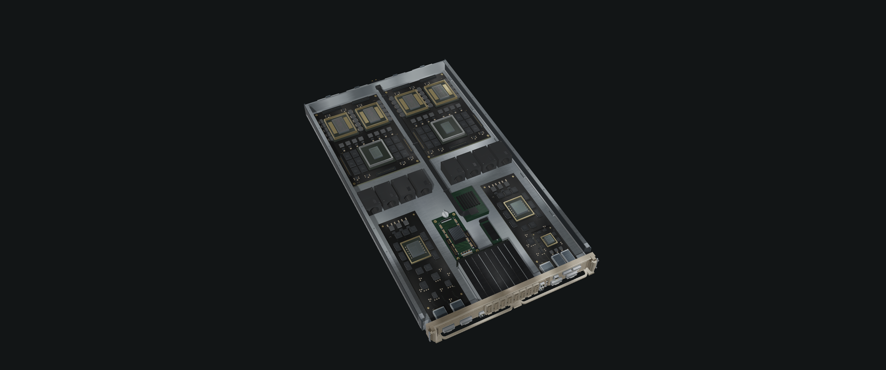
Controlled camera comparison · semantic stage plate-install · stage fraction 0.5
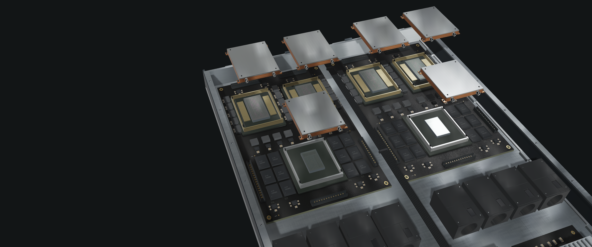
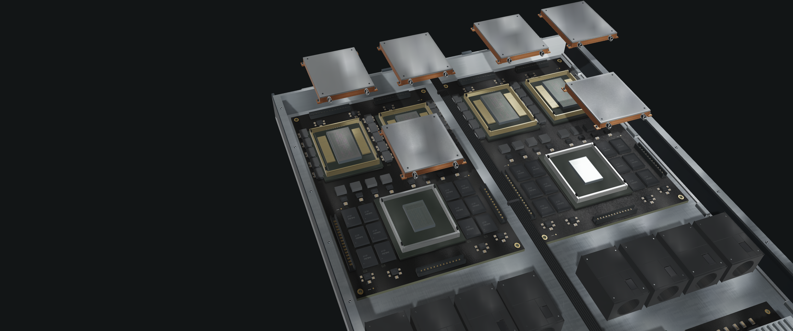
Controlled camera comparison · semantic stage plumbing · stage fraction 0.5
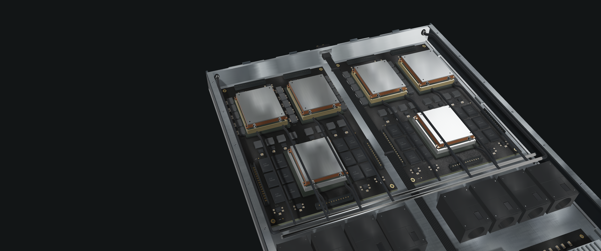
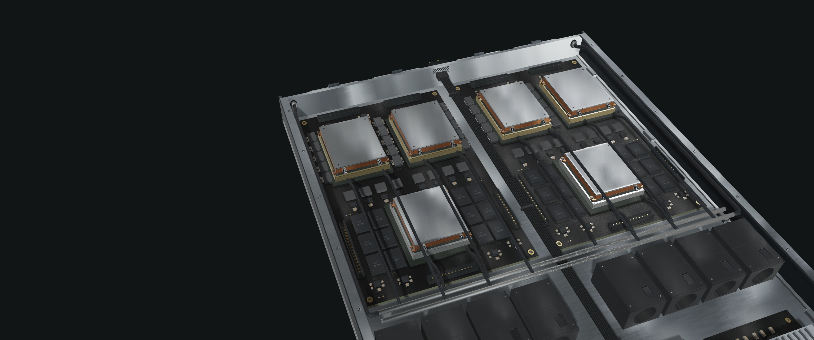
Controlled camera comparison · semantic stage flow · stage fraction 0.4
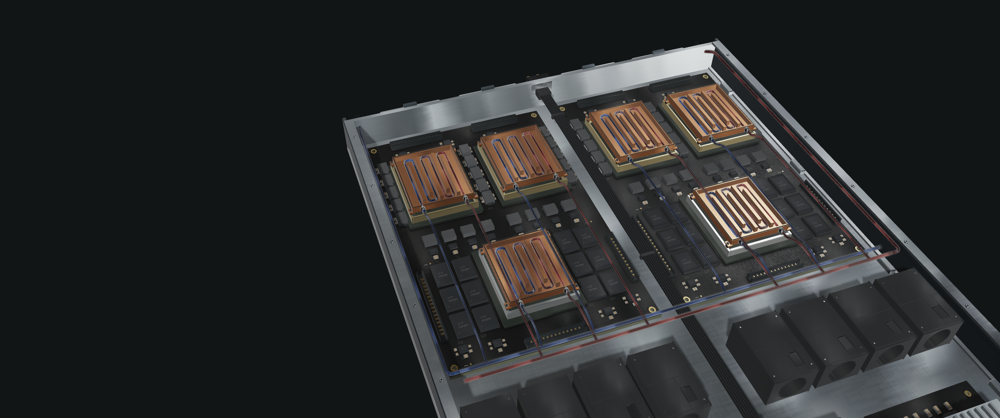
Controlled camera comparison · semantic stage flow · stage fraction 0.7
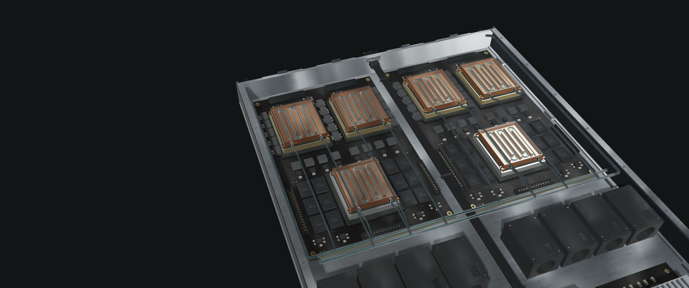
Controlled camera comparison · semantic stage solid · stage fraction 0.5
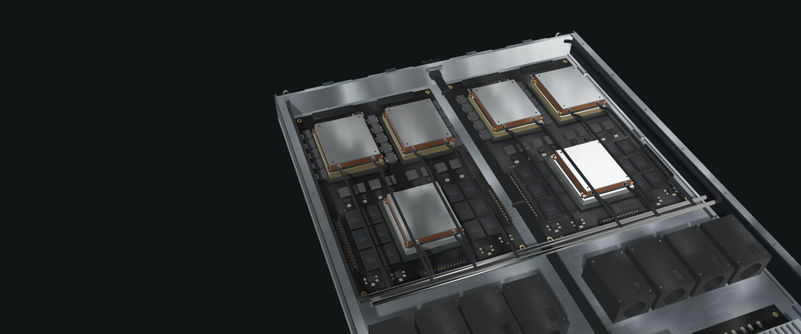
Controlled camera comparison · semantic stage lid · stage fraction 0.5
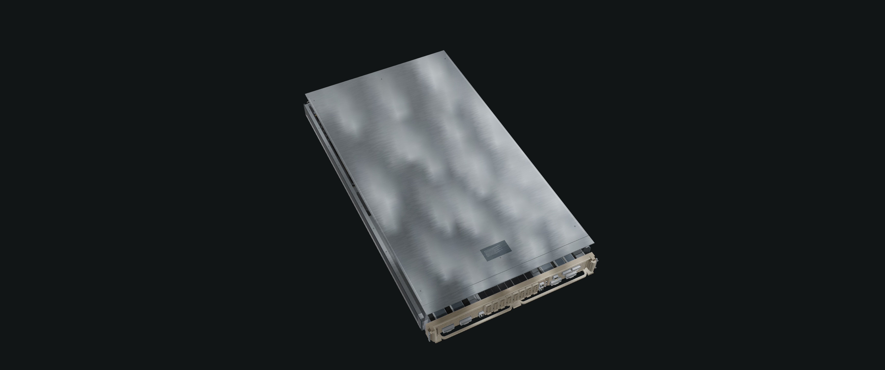
Controlled camera comparison · semantic stage rack · stage fraction 1
Controlled camera comparison · semantic stage solid · stage fraction 0.5
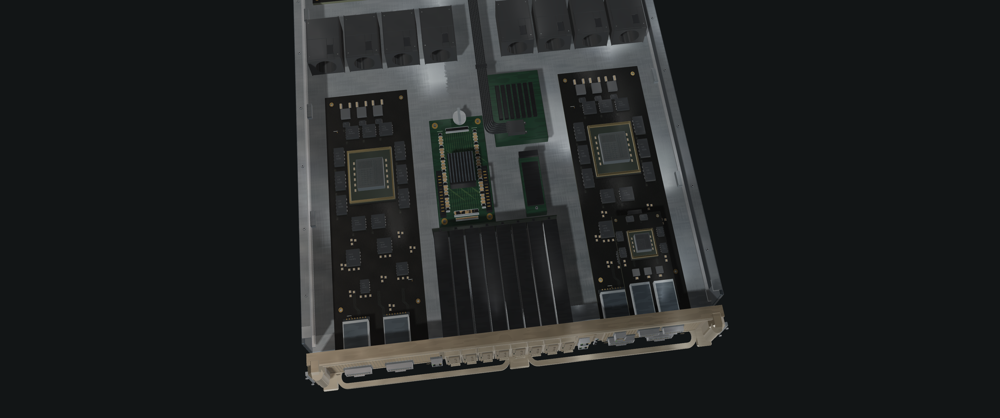
Controlled camera comparison · semantic stage solid · stage fraction 0.5
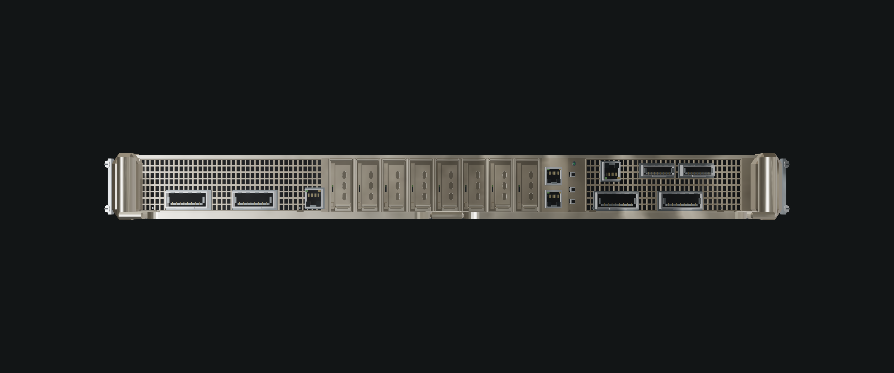
Context only · not a controlled camera comparison · semantic stage plate-install · stage fraction 0.5
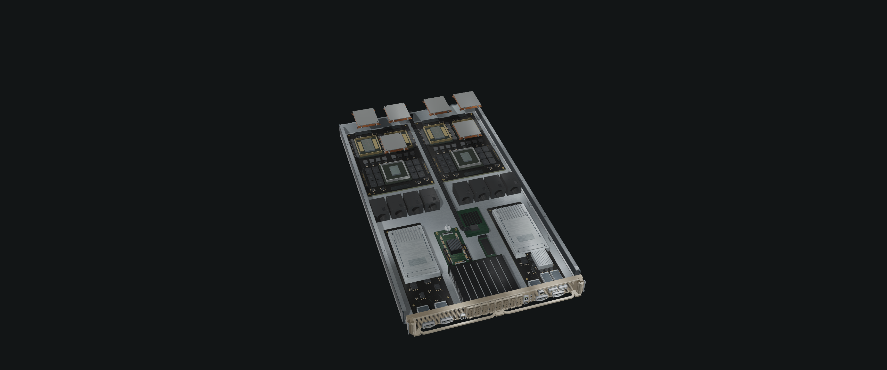
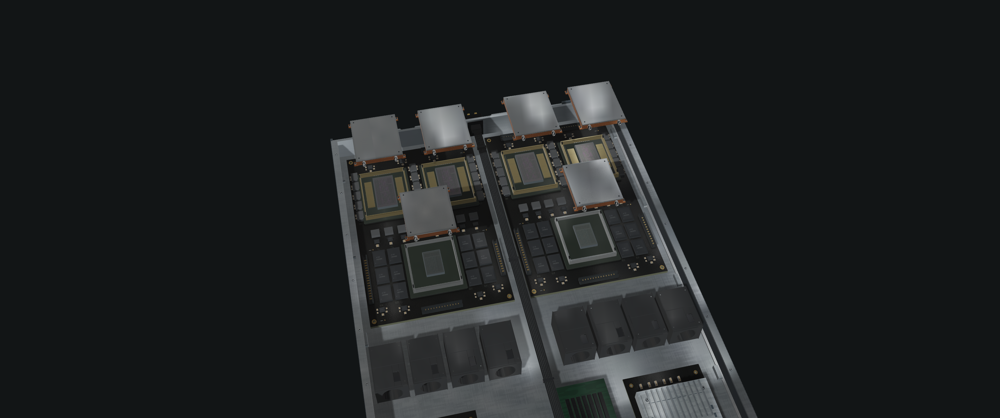
Context only · not a controlled camera comparison · semantic stage flow · stage fraction 0.4
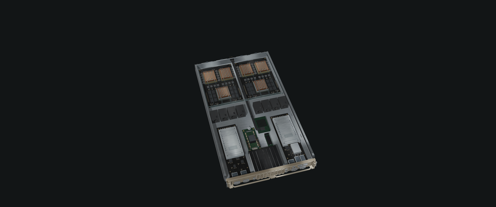
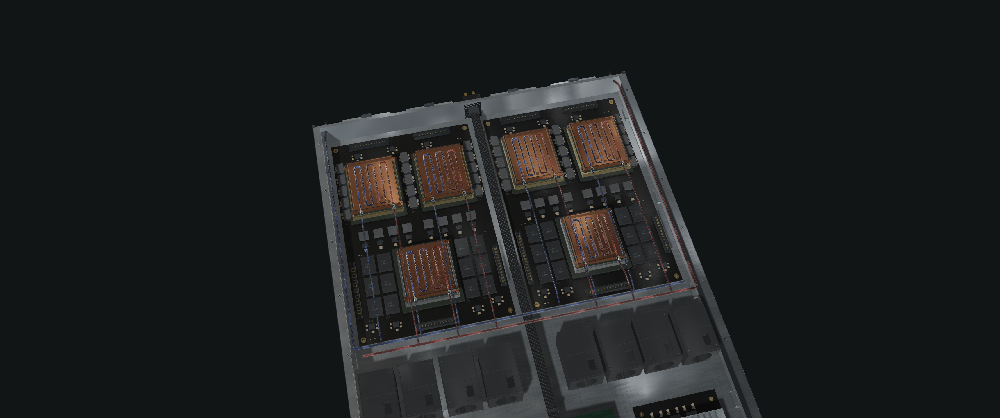
Context only · not a controlled camera comparison · semantic stage solid · stage fraction 0.5
Context only · not a controlled camera comparison · semantic stage solid · stage fraction 0.5
Resource hashes and actual draw evidence. Visual acceptance is independent of automated pass status.